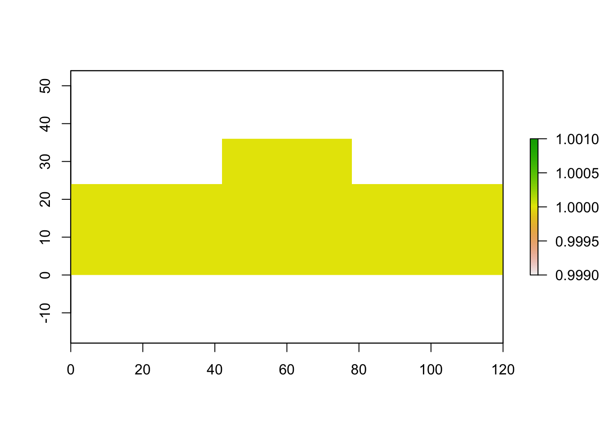

3 Randomly Generating Patterns
3.1 Introduction
I'd like to re-do the backsplash in my kitchen. It's ok tile, but it's a lot of beige. I'd prefer some talavera tiles sprinkled in with white tiles. I'd like to have it be more random than a structured pattern, so I'm going to write some code to randomly generate the location of the colorful tiles. I'm also undecided about the relative size of the tiles I'd want, so I'll play with that here, too.
The area is like a tophat shape with two short rectangles on each side a taller and more square shape in the center. I'm going to assume that I only want square tiles so I'll be using rasters to represent the tiles. I just won't be able to visualize grout this way.
Does sf have gridded geometry?
I'm going to start with the idea that these are all 1 in tiles and that grout is negligible thinkness. The area is 10 ft long with the first 3.5 ft being 2 ft tall, the next 3 ft being 3 ft tall, and the final 3.5 ft being 2 ft all.
Insert picture of kitchen here with red or blue lines marking dimensions
3.2 Packages being used
library(raster)
library(sf)3.2.1 Step 1: Draw the backsplash domain
For sanity's sake, we will consider the bottom left of the backsplash as the origin in our coordinate system.
backsplash_length <- 10*12
backsplash_height <- 3*12
backsplash <- raster(nrows = backsplash_height,
ncols = backsplash_length,
xmn = 0,
xmx = backsplash_length,
ymn = 0,
ymx = backsplash_height,
crs = NA,
vals = 1)
# Where are my cabinets?
cabinet_bottom <- 2*12 # 2 ft, at what height the cabinets start
cabinet_width <- 3.5*12 # 3.5 ft, how wide the cabinets are
cabinet_spacing <- 3*12 # 3 ft, space in between cabinets
# Let's make some intermediate variables just to make the logic clearer
tile_x <- coordinates(backsplash)[,1]
tile_y <- coordinates(backsplash)[,2]
values(backsplash)[ (tile_x < cabinet_width |
tile_x > cabinet_width+cabinet_spacing) &
tile_y > cabinet_bottom ] <- NA
plot(backsplash)
3.2.2 Step 2: Randomly placing talavera tiles
# How many tiles I want?
N_talavera <- 2*12 # let's say packages come in by the dozen and I get two
tala_x <- runif(N_talavera*2, min = 0, max = backsplash_length) %>% floor()
tala_y <- runif(N_talavera*2, min = 0, max = backsplash_height) %>% floor()How do you do that code in another script thing and I just pull in named chunks here?